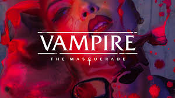
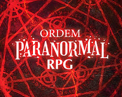
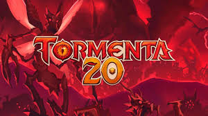

Vampire: The Masquerade 5e

RPG de terror pessoal no qual os jogadores interpretam vampiros, equilibrando sua fome e humanidade enquanto lidam com política, segredos e intrigas no Mundo das Trevas.


RPG de terror pessoal no qual os jogadores interpretam vampiros, equilibrando sua fome e humanidade enquanto lidam com política, segredos e intrigas no Mundo das Trevas.

Sistema brasileiro criado por Cellbit, baseado no universo de terror investigativo da série homônima. Os jogadores são agentes enfrentando ameaças sobrenaturais e o avanço da corrupção causada pelo “Outro Lado”, o sistema usa d20 para testes.

O RPG de fantasia medieval mais famoso do mundo. Os jogadores assumem papéis de heróis em mundos cheios de magia, monstros e aventuras. O sistema usa dados de vinte lados (d20) para testes de ataque, perícia e resistência, com mecânicas simples que valorizam tanto o combate tático quanto a interpretação.

Sistema brasileiro de RPG de fantasia, ambientado no mundo de Arton. Inspirado em D&D, mas com identidade própria, T20 é conhecido por sua flexibilidade na criação de personagens, raças e classes únicas (como lefou, qareen e paladino de Valkaria).